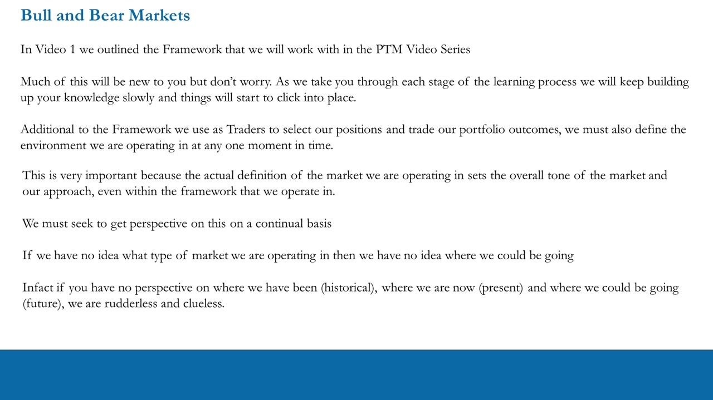
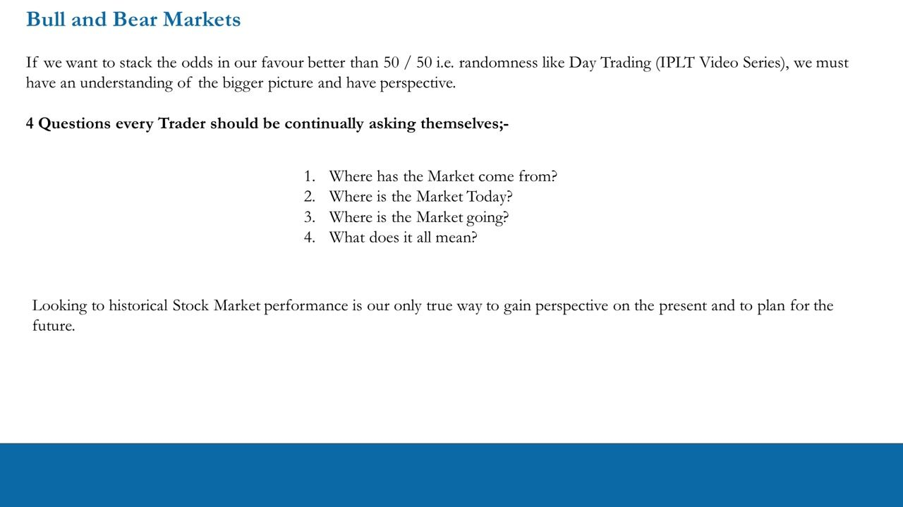
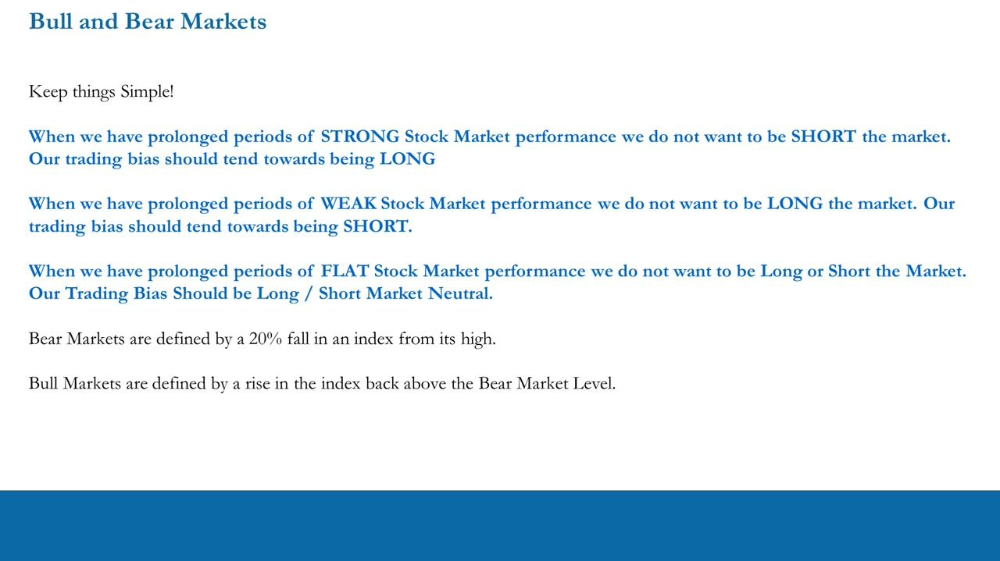
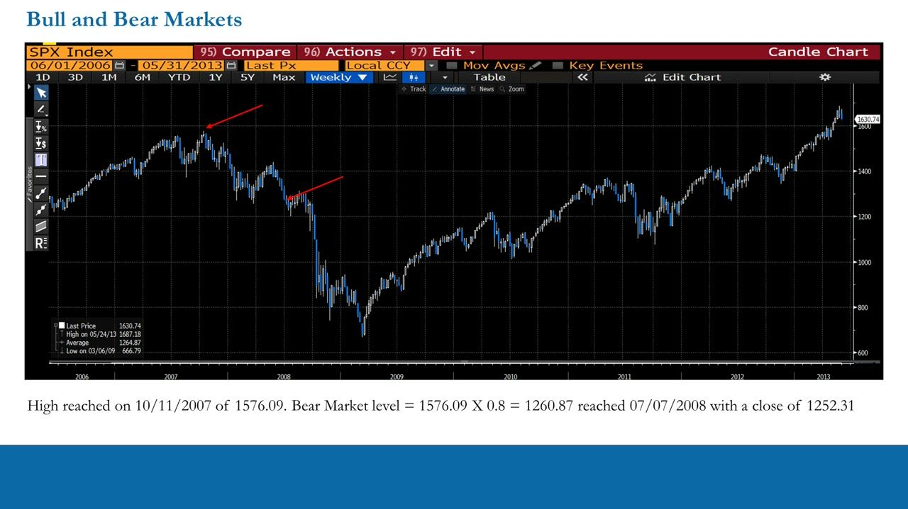
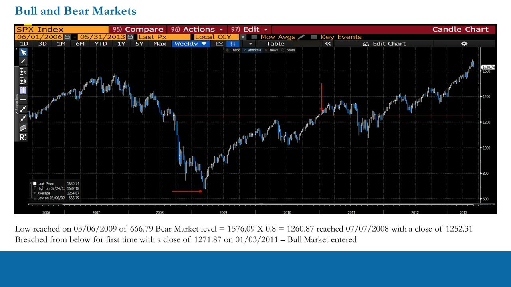
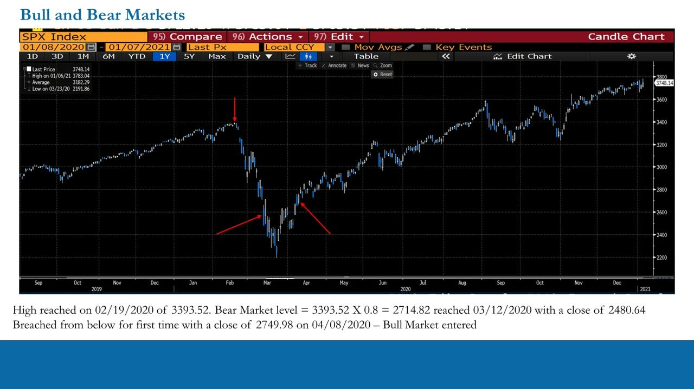
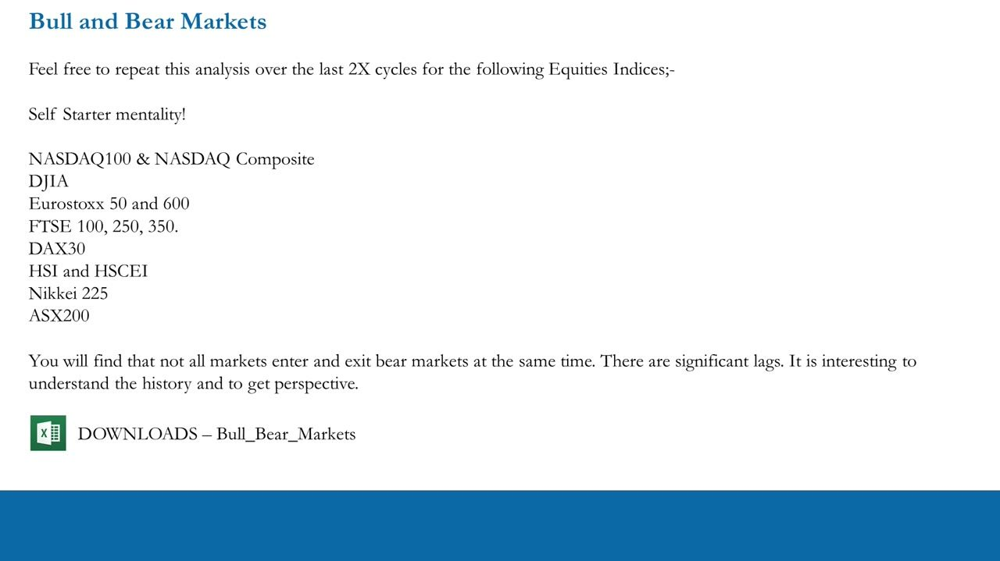

The Field of Play: Bull & Bear Markets
Objectively defining the market environment with the 20% rule before you trade
Before selecting any position you must define whether you are in a bull or bear market, and the professional definition is mechanical: a bear market is a 20% fall from the high, a bull market is a rise back above that level.
The gist
- The market environment sets your directional bias: strong market = lean long, weak = lean short, flat = long/short market neutral.
- Bear Market = a 20% fall in an index from its high. The Bear Market Level = rolling high x 0.8; the index enters a bear market when it CLOSES below that level.
- Bull Market = a rise in the index back ABOVE the prior Bear Market Level (NOT the media's '20% off the lows' definition).
- Always use closing prices; the same template applies to any index or stock in the world.
- Repeat the analysis across ~14 global indices (self-starter mentality): not all markets enter and exit bear markets at the same time, there are significant lags.
Why you must define the environment
- Beyond the framework used to select positions, you must define the environment you are operating in at any one moment in time.
- The definition of the market sets the overall tone and your approach, even within that framework.
- You must seek this perspective continually; with no idea what type of market you are in, you have no idea where you could be going.
- Without perspective on where the market has been (historical), is now (present) and could be going (future), you are rudderless and clueless.
This is the first step every pro trader takes, usually automatically. In the learning process it must be done deliberately.

The four perspective questions
- To stack the odds better than the 50/50 randomness of day trading, you need an understanding of the bigger picture.
- 1. Where has the market come from? 2. Where is the market today? 3. Where is the market going? 4. What does it all mean?
- Looking to historical stock-market performance is the only true way to gain perspective on the present and to plan for the future.

Directional bias and the definitions
- Prolonged STRONG performance: do not be short; bias toward LONG.
- Prolonged WEAK performance: do not be long; bias toward SHORT.
- Prolonged FLAT performance: neither long nor short; bias toward Long/Short Market Neutral.
- Bear Market = a 20% fall in an index from its high.
- Bull Market = a rise in the index back above the Bear Market Level (the level set by the 20% fall from the rolling high).
- The media's '20% rise off the low' is NOT the professional definition of a bull market.
Keep it simple: the environment mechanically dictates the portfolio's directional tilt.

S&P 500 worked example: entering the 2008 bear
- High reached 10/11/2007 of 1576.09.
- Bear Market Level = 1576.09 x 0.8 = 1260.87.
- Reached 07/07/2008 with a close of 1252.31, so the S&P 500 entered a bear market when it closed below 1260.87.
- After breaking the level it rallied and traded above it for roughly six weeks before collapsing again.
The first break below the bear level is the warning: even during the brief rally above it, a trader would be de-risking rather than staying net long.

S&P 500 worked example: re-entering the bull
- Low reached 03/06/2009 of 666.79.
- The prior Bear Market Level (1260.87) becomes the new Bull Market Level.
- It was breached from below for the first time with a close of 1271.87 on 01/03/2011, so the bull market was entered then.
- This is later than most people remember: the media '20% off the lows' definition makes people think the bear ended much sooner.
The official bull re-entry took until January 2011. On that signal day a trader would question any short position and lean toward a long bias.

S&P 500 worked example: the 2020 COVID crash
- High reached 02/19/2020 of 3393.52.
- Bear Market Level = 3393.52 x 0.8 = 2714.82, reached 03/12/2020 with a close of 2480.64.
- Breached from below for the first time with a close of 2749.98 on 04/08/2020, so the bull market was entered then.
- A very fast cycle: bear entered 12 Mar 2020, bull re-entered less than a month later on 08 Apr 2020.
- The move from the bear level (2714.82) to the ~2200 low was still very large; many S&P constituents fell 40-70%.
- Because closing prices are used, the visual chart can mislead: check the numbers, not the eye.
Same formula, faster cycle. On the day the bear level broke you would question being long; on the bull re-entry you would question being short.

Repeat across the global indices
- Self-starter exercise: repeat the analysis over the last 2 cycles for each major index.
- Indices: NASDAQ 100 & NASDAQ Composite; DJIA; Eurostoxx 50 & 600; FTSE 100, 250, 350; DAX 30; HSI & HSCEI; Nikkei 225; ASX 200.
- Not all markets enter and exit bear markets at the same time; there are significant lags.
- The accompanying spreadsheet (Bull_Bear_Markets) tracks each index's Rolling High, Rolling Bear Market Level (high x 0.8) and Bull/Bear label.
The same template applies to any equity index or stock in the world; studying the lags between markets builds real historical perspective.

Glossary
- Bear MarketA 20% fall in an index from its high. The index enters a bear market when it closes below the Bear Market Level.
- Bear Market LevelThe rolling index high multiplied by 0.8 (20% below the high); the trigger level for a bear market.
- Bull MarketA rise in the index back above the prior Bear Market Level. NOT the media's '20% rise off the low'.
- Directional biasThe portfolio tilt the environment dictates: long in strong markets, short in weak markets, long/short market neutral in flat markets.
- PerspectiveKnowing where the market has been (historical), is now (present) and could be going (future) so decisions are not made blind.
- Self-starter mentalityOne of the ITPM principles: go and get the data and do the analysis yourself rather than being spoon-fed.